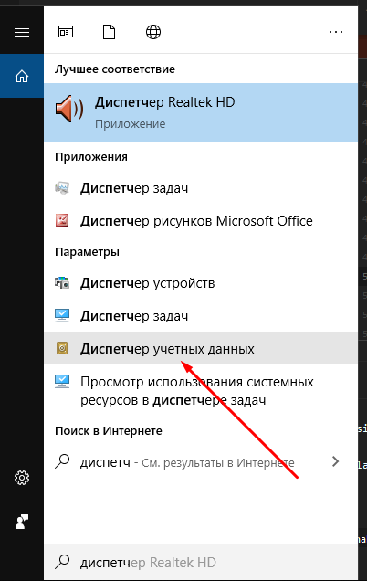
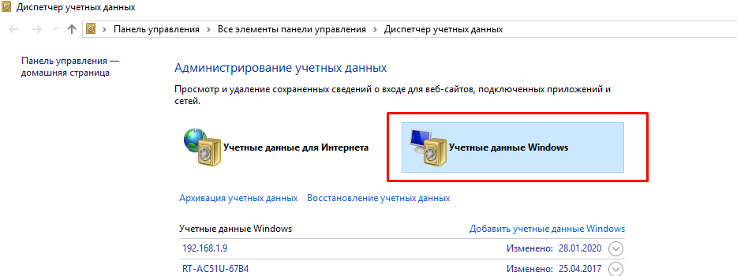
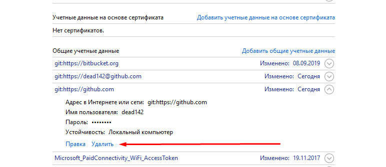

КЕЙС (СИТУАЦИОННОЕ ЗАДАНИЕ)
По теме: «Система контроля версий»
Цель работы: закрепление практических навыков работы с основными понятиями и командами системы контроля версий git.
Формируемые компетенции: ПК5.1 Собирать исходные данные для разработки проектной документации на информаци-онную систему. ПК 5.2 Разрабатывать проектную документацию на разработку информационной системы в соответствии с требованиями заказчика. ПК 5.4 Производить разработку модулей информационной системы в соответствии с техническим заданием. ПК 5.6 Разрабатывать техническую документацию на эксплуатацию информационной системы
Задания:
- Пройти регистрацию на GitHub или GitLab или Bitbucket.
- Создать репозиторий, в качестве имени которого будут выступать номер группы и инициалы. Пример для студента группы 286, Петрова Петра Петровича имя репозитория будет выглядеть как: «286-PetrovPP.»
-
Переименовать папки, в которых содержатся задания, по шаблону: <номер работы>_<вид работы>.
Примеры: «1_lab», «2_task», «3_case». Где: – lab – лабораторная работа; – task –задача; – case – кейс.
Таким образов, структура репозиотрия может быть представлена как:
– Репозиторий «286-PetrovPP» – 1_task index.php – 2_task index.php …………… – 8_task index.php about.php
- Добавить папки в репозиторий и отправить их в удаленный репозиторий.
- В качестве отчета, прислать на почту beregkov@spb-rtk.ru письмо со ссылкой на репозиторий. Тема письма оформляется по шаблону: <номер группы> <ФИО> <Название работы>. Пример темы: 286 Петров П.П. Кейс №1. Просьба в подписи к письму писать ФИО полностью.
Методические материалы и помощь
- Для инициализации репозитория перейдите в папку с проектом (команда cd) выполните команду
git init - Для добавления файлов выполнить команду
git add . - Для фиксации изменения выполняется команда
git commit -m "Name of commit" - Указание пути к удаленному репозиторию осуществляется командой
git remote add origin https://github.com:nicothin/test.git - Отправка в удалённый репозиторий
git push origin masterЕще больше команд вы найдете здесь: https://github.com/nicothin/web-development/tree/master/git
Ошибка при push
1) Открыть "Диспетчер учетных данных"

Рисунок 1 – Диспетчер учетных данных
2) Перейдите на вкладку "Учетные данные windows"

Рисунок 2 – Учетные данные windows
3) Удаление данных предущего пользователя GitHub

Рисунок 3 – Удаление данных предущего пользователя GitHub
Шкала оценивания и критерии оценки
| Оценка | Критерии оценивания выполнения задач (домашнего задания) |
|---|---|
| 5 | Ход решения верный, все его шаги выполнены правильно, сообщение коммита имеет смысл |
| 4 | Ход решения верный, все его шаги выполнены правильно, но допущена ошибка при выполнение коммита или сообщение коммита не имеет смысла |
| 3 | Ход решения верный, задание решено не полностью |
| 2 | Другие случаи, не соответствующие указанным критериям |